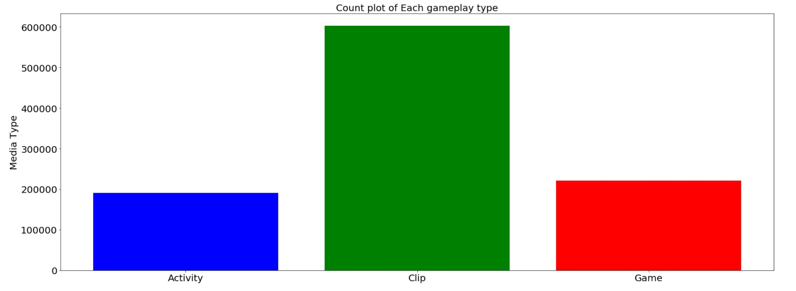
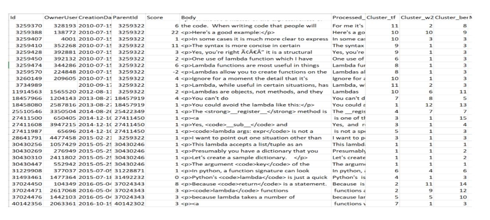
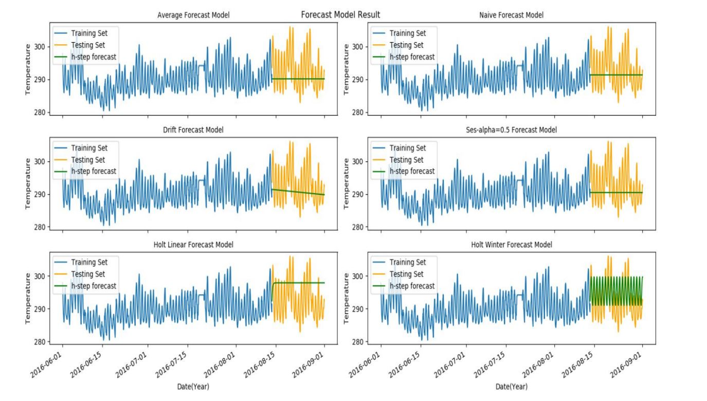

Resume
Summary
Skills & Certifications
- Languages: R, Python, SQL, PL/SQL, JAVA
- Tools: Tableau, Visual Studio Code
- Certifications: ORACLE – SQL Fundamentals
Education
MS in Data Science
Anticipated May 2021
George Washington University, DC
Current CGPA (Spring 2020): 4.0/4.0
Relevant Courses: Data Mining, Machine Learning, NLP, Cloud Computing, Time Series Analysis
B.E. in Electronics & Communication
Aug 2008 - June 2012
Velammal Engineering College (Anna University), India
CGPA: 9.18/10
Honors: 1st rank in the college and 4th rank in the university.
Part-Time
Project Assistant II
Jan 2020 - Present
George Washington University, DC
- Designed and built an interactive dashboard to demonstrate the significance of work produced by various GW library departments using google charts.
- Analyzed and created customizable user reports for several classroom related services using tableau.
Professional Experience
IT Analyst
Aug 2016 – July 2019
Tata Consultancy Services, Chennai, India
- Validated & tested predictive model to forecast usage of the customers and client’s revenue from past contracts.
- Designed and built an automated regression testing tool to compare testing images using OpenCV algorithm which saved more than 70% of manual effort and improved accuracy.
- Trained team to design workflow, perform ETL operations and to identify KPI’s to promote business objectives.
- Performed data analysis, developed SQL queries, and worked in Tableau to generate customized client reports.
Skills/Concepts – Time Series Analysis, ARIMA, Open CV, Python, R, Data Warehousing, QlikView, Tableau, SQL
Assistant System Engineer
Nov 2012 – Aug 2016
Tata Consultancy Services, Chennai, India
- Developed a tool using UNIX Shell scripting to monitor and improve the health of the WebLogic servers to proactively track server status that helped to reduced 80% of customer impacting incidents
- Provided superfast broadband access to customers by serving as core member at client office in United Kingdom.
- Widely appreciated for transforming new rack design workflow activities which brought new projects to TCS.
Recognitions - Star of the Month with several eCards of appreciation from the client and delivery manager
Concepts – WEBLOGIC, UNIX Shell Scripting, SQL
Projects
- All
- Capital Bikeshare
- PBS Kids App
- NLP-SO Search Engine
- Weather Forecasting
- Traffic Congestion
- Landmark Recognition
Capital BikeShare
Oct – Dec 2019
Short Description
Developed a model to forecast the rental demand by predicting usage pattern using bikeshare and weather data
Skills/Concepts – Linear Regression, Random Forest, Decision Tree Classifiers
git link: https://github.com/gayuc07/Capital-Bikeshare
Introduction
Capital Bikeshare (also called CapBi) is a bicycle sharing system that serves Washington DC, Arlington County, Alexandria, Falls Church, Montgomery County, Prince George’s County, and Fairfax County. The Capital Bikeshare system is owned by the local governments and is operated by Motivate International, Inc.(Motivate International, Inc). As of August 2019, Capital Bike has 500 stations and 4300 bicycles.
The distribution of the docks is shown below:
As we can see from the above image, the majority of the docks for the bicycle are in Washington DC.
Bike tours in Washington DC are not only a popular family activity but renting a bike is a great way to get around without breaking the bank or sitting in traffic. There are dedicated bike lanes in Washington DC hence there is safety and convenience for the rider.
Capital BikeShare is undoubtedly cheaper than its competitors and the docks are conveniently placed around monumental locations. Capital Bikeshare is often faster than other modes of transportation and its annual membership offers unlimited trips under 30 minutes which helps save money. CapBi can be used to commute to work or ride to meet friends and is a great alternative for exercise since it is human-powered instead of electric powered. CapBi services save fuel, prevents carbon emissions, it is not only healthy for the rider but also for the environment.
As CapBi services are very popular and always in demand, we want to predict the number of bikes riders will use per hour and have contingencies to fulfill the demand. To estimate the number of bikes required we will consider various factors such as weather, temperature, working or non-working hour, the hour of the day, etc.
Exploratory Data Analysis
Bike Demand by Season and Temperature
From the plots below we can see that winter is the least favorite season for hiring bikes while spring, summer, and fall have pretty similar patterns.
In this plot we also include the temperature, and observe that higher numbers of bikes are rented in each season when temperatures are between 80-90 degree Fahrenheit.
Bike Demand by Year, Weekday & Hour of the Day
There is a steady increase in the number of bikes rented up to the year 2017 and then it decreased in 2018. Also, more bikes are hired during the weekday as compared to weekends.
The bikes hired peak during morning and evening 8 AM and 6 PM rush hours when people are heading or returning back from work.
Bike Demand by Holiday
We notice that riders rent bike more often on days when there is no holiday, but the number of bikes rented during holidays is still significant.
Correlation Between Bikes Hired and Weather
There is a positive 44% correlation between temperature and bikes hired, additionally, Humidity has a negative correlation of 30%.
Model Assessment
Thus random forest performs the best with the R-square value being highest at 0.93.
Conclusion
In terms of modelling & predictions, we can conclude that :
- Random Forest works best with the given dataset
- Maximum R2 value obtained is 0.93
- Variable Importance are as follows:
- Hour of Day – Best 6PM-7PM,8-9AM
- Weekday – Weekend
- Time of Day – Working Hour
- Temp – Moderate Temperature – 70–90F
The insights which we got from our analysis is that on a normal day, users tend to ride a bike for commuting to offices, schools, etc. But on weekends & holidays, people prefer to use bikes for travel and leisure activity purposes. We also derive that bikes are preferred maximum in moderate temperatures and users tend to avoid bikes at high temperatures and low temperatures.
Based on our analysis we recommend that during high demand in morning and evening office hours and weekend/holiday, Capital Bikeshare should increase availability during these hours. Thus catering to more users and in turn, securing more profits.
References
- Motivate International, Inc. (n.d.). Press Kit. Retrieved November 26, 2019, from https://www.capitalbikeshare.com/press-kit.
- Capital Bikeshare Discount. (n.d.). Retrieved November 26, 2019, from https://benefits.gwu.edu/capital-bikeshare-discount.
- Therneau, T. M. (2019, April 11). An Introduction to Recursive Partitioning Using the RPART Routines. Retrieved November 26, 2019, from https://cran.r-project.org/web/packages/rpart/vignettes/longintro.pdf
PBS Kids Measure App Assessment
Mar – May 2020
Short Description
To predict the accuracy group of the user(i.e) to forecast how many attempts a child will take to pass a given assessment
Skills/Concepts – Linear Regression, Random Forest, Decision Tree Classifiers, Ensemble Methods
git link: https://github.com/gayuc07/PBS-KIDS-Measure-Up-App-Assesment
Introduction
The "KIDS Measure Up" app is an educational application which helps kids explore and learn fundamental math concepts in a fun and interactive manner.
The dataset contains game analytics for KIDS Measure Up! app. In this app, children navigate a map and complete various levels, which may be activities, video clips, games, or assessments.
Each assessment is designed to test a child's comprehension of a certain set of measurement-related skills. There are five assessments: Bird Measurer, Cart Balancer, Cauldron Filler, Chest Sorter, and Mushroom Sorter.
The purpose of our analysis is to use the gameplay data to forecast how many attempts a child will take to pass a given assessment and hence predicting the accuracy group for user. The outcomes of this analysis are grouped into 4 groups (labeled accuracy_group in the data):
- 3: the assessment was solved on the first attempt
- 2: the assessment was solved on the second attempt
- 1: the assessment was solved after 3 or more attempts
- 0: the assessment was never solved
Exploratory Data Analysis
Assessment type
We notice that the Cart Balancer(Assessment) is the most popular assessment followed by Cauldron Filler, Mushroom Sorter, Chest Sorter and Bird Measurer.
GamePlay Type
We notice that the Clip media type is most famous, followed by Activity and Game.
Game Time
Accuracy group 0 is highest, it means that kids who take more attempts to solve the assessment, play the game for a longer time period.
Assessment vs Accuracy Group
Modelling
As a Classification problem, we plan to experiment various classifier and identify best classifier that suit the given dataset.
From exploratory data analysis and correlation matrix we could see most of the events id doesnt consitute to target values, so we aim to drop the feature from data. We trained whole data using random forest classifier and the event_id importance over the assesment target value is observed. Considering all these, we could able to select top 10 events that marginally influence the data.
Feature Importance
This is similar to EDA we analysed previously, each users events count, clips watched , game played before assessment are contributing factor for outcome of his assesment result. Also we could see,kid's experience over other assesment also helps them with current assesment.
Conclusion
EDA Results
- Bird Measurer and Chest Sorter assesments are rare events, Kids usually prefer basic level assesment like cart balancer and cauldron filler than harder levels.
- TREETOPCITY is most played city by kids
- Kids are most interetsed to watch clips compared to games and activity
- From history of records provided, kids are able to perform well on their first attempt and falls into the accuracy group of 3. Kids are prone to complete assesments like cart balancer, cauldron Filler at their first attempt.
- Total time spent by group 3 is more compared to group 2 which infers kids take their time in their first assesment.
- Bird measurer and chest sorter have less accuracy level compared to other assesment.
Modelling
- Ensemble methods and catboost model performs better with accuracy of ~56%
- Previous assesment details, event count, game time are influencing factors for predicting the target groups
Recommendations
From above analysis, we could suggest kids are finding difficulities in completing chest sorter, bird measurer, if they could add more clips and activity, it will be helpful to perform better. Also, as Kids prefered to watch more clips compared to games/activity, clip contents can be improved and they could also concentrate on developing eye catching game/activity or check for issues with present content for its less usage compared to clips, so that kids can take max out of these resources as well.
Future Goals
Present Model produces result at accuracy of ~56%.This is mainly due to high difference on number of samples of each accuracy group. Although oversampling is performed, model couldnt able to capture perfect distinction among the accuray groups. If we able to get more samples for these records then we could able infer better details. Also in this project we have experimented only with aggregated play history of each kids. However, there are possibility event sequence plays vital role, LSTM Model with embedding on events can be experimented to check sequence level dominance to target prediction.Further analysis on the dataset is required to get more prominent features that constitute to the target variables like checking interval after which each game or assesment is taken, etc.
Retrieval of Relevant Answers to Stack Overflow Queries by Ranking the Answers - Python
Mar – May 2020
Short Description
Improved Stack Overflow Q&A search using semantic similarity and ranking top answers for question searched.
Matched the question-answer pair using hierarchical cluster to find the best cluster using similarity score.
Skills/Concepts – Word2Vec, Bert Embeddings, Cosine Similarity, Hierarchical Clustering
git link: https://github.com/gayuc07/NLP-StackOverflow-QnA-Search-Engine
Introduction
Stack Overflow is a question and answer site for professional and enthusiast programmers. It provides a platform for its users to post questions and answers. It also allows its users to upvote or downvote these questions and answers. Stack overflow has a wide range of questions and challenges faced by developers and their solutions in the computer engineering field. As per the Stack Overflow survey 2019, around 97% of developers visited the Stack Overflow website last year. And about 50 million people visit Stack Overflow to learn, share, and build their careers every month.
Although this forum offers numerous advantages for developers, on the flip side there are few drawbacks associated with it. Sometimes Stack overflow’s search engine does not retrieve any results even if a similar question exists in the repository. And as stack overflow allows duplicate questions and each question has a different set of answers many users find it difficult to get relevant answers to their queries. As the main source of revenue for stack overflow is through advertising these are the advantages to drive more traffic. However, the problem arises when users use more sophisticated search engines like google and these search engines redirect the user to other sites. Hence to overcome these gaps this project aims at improving Stack Overflow search using semantic similarity between questions & answers and retrieving the most relevant answers using a ranking methodology.
Experimental Setup
Example: Search Question: What is the use of lambda function?
Question Processing
In this phase, the probe question is compared with the stack overflow question corpus to find the most similar questions in the corpus. Initially, basic text preprocessing is performed on question title part and search question which includes lowercasing the tokens, converting accented characters, and removing stop words from tokens. However, stemming and lemmatization is not performed as the data is related to technical questions with different domain-specific meanings. Also, numeric data is preserved as removing numbers from questions changes the contextual meaning. On the preprocessed data various embedding techniques like word2vec, Bert, etc are performed to convert text to numbers. Embedded data is then compared using cosine similarity to get top similar questions for the search question. Each question is scored against distance value i.e. questions with less distance value are more similar to each other and vice versa. The questions with similar values are studied manually for various embedding techniques. It is observed that word2vec and Bert perform better than other embedding techniques for a given dataset. Hence, to improve the quality of the question similarity outcome results of both the embeddings are combined and questions with a similarity score greater than 0.90 are selected. Question processing helps gather answers spread across various duplicate questions for further analysis.
For a given question questions.csv is explored to get similar questions and each question is ranked manually to compare and check the performance of model result as shown in Figure
As shown above fig the result obtained by the Bert+Word2vec model, 4 out of 5 questions match with our manual ranking.
Answer Processing
In this phase, associated answers for selected questions are filtered and grouped to form various answer clusters. Similar to the question processing, basic text preprocessing was performed on the answer dataset. Apart from that, HTML tags related to code, image, URL were removed to extract the text information from the answer corpus. This processed data is converted to numbers using embedding models like Bert, tf-idf, word2vec, and fed to the hierarchical clustering model. Like question processing, data clusters are evaluated manually for each embedding technique. It is observed that Bert clusters perform better compared to other cluster data.
Figure shows hierarchical cluster results on answers set over various embedding models. After manual evaluation of each of the results, it is observed that Bert embedded results give good results with hierarchical clustering.
Question and Answer Mapping
Each answer cluster is compared to search questions using cosine similarity to check relevance between questions and answers. The similarity score is aggregated at a cluster level to rank the clusters. However, most of the answer part contains code chunks, leaving less information in the natural text to get actual relevance. To overcome this issue, the score features available in answer.csv. is used. The score value is the user annotated score for each answer to the question. Both similarity and user annotated scores are combined to get an overall score for each cluster. Clusters with maximum scores are ranked as top answer output.

Top Answer
Top Answer obtained from our model is given below

Challenges
Stack Overflow Q&A system is domain-specific, every stage requires additional preprocessing to preserve domain details associated with it. To overcome the issue various data preprocessing steps were revisited to have maximum details for the next stage in the process.
The answer set is a mixture of text, codes, images, and links. The answer body is dominated with code chunks than natural text making it difficult to conclude only with the similarity score of the model. Different strategies were used to get the most relevant answers and to overcome the issue.
Results
The word relevance of word2vec combined with the Bert sequence model to capture the semantic importance of the word in numeric form works great for the dataset in retrieving relevant questions for search questions. Grouping the most similar answers from answer corpus helps with relevance matching and eliminates redundant answers from the result set. Overall, the Bert model produces good results for retrieval of matched answers for given questions.
References
- Stack Overflow Developer Survey Results from 2019,Retrieved from: https://insights.stackoverflow.com/survey/2019#overview
- Kaggle dataset - Python Questions from Stack Overflow - Retrieved from: https://www.kaggle.com/stackoverflow/pythonquestions
- Google Cloud Big Query StackOverflow Public dataset - Retrieved from: https://cloud.google.com/stack-overflow-q-a
- Training a Ranking Function for Open-Domain Question Answering Research Paper - Retrieved from: https://www.aclweb.org/anthology/N18-4017.pdf
- Comparison of different Word Embeddings on Text Similarity — A use case in NLP - Retrieved from: https://medium.com/@Intellica.AI/
- Word embedding - Retrieved from: https://medium.com/data-science-group-iitr/word-embedding-2d05d270b285
Weather Forecasting - Hourly Temperature of Seattle City
Oct – Dec 2020
Short Description
Built an forecast model to predict the hourly temperature of seattle city
Skills/Concepts – Stationarity Test, GPAC, Linear Regression, Auto regressive models(ARMA), Seasonal ARIMA
git link: https://github.com/gayuc07/Weather-Forecasting
Introduction
Weather forecast is the branch of science to predict the conditions of the atmosphere for the given location and time. This is more relatable as this helps to plan everyday travel and other related activities. Weather warnings are the most important forecasts as they protect life and property from adverse damage. In this project, I have used hourly temperature data of the Seattle city and built a prediction model to forecast the upcoming temperature. I have made use of various time series model techniques like average method, naïve method, drift method, simple exponential smoothing, holts’ linear method, holts winter method and ARMA methods to build the prediction model. Also, I have performed multivariate regression analysis on the dataset to check the linear dependency of the target variable with the regressor. A comparative study is performed to determine the best model by evaluating the results of these models like MSE values, variance & mean of the predicted error & forecast error, Q value and chi square test results. Using this best model,the h step forecast is performed on the test set.
Temperature Pattern Over time
From the above plot, we could observe strong trend, seasonality, and cyclic pattern present in the dataset.
Let’s take a closer look at the seasonal part of the dataset, to understand more on the hourly data pattern. For this, I have sampled 7-day data from the dataset and plotted the data.

This plot uses the data from July 28, 2016 00:00:00 to Aug 04,2016 23:00:00. We could see a repeating pattern every 24-time cycle. Also, seasonal spike is not the same, this information is helpful while selecting “add” or “mul” decomposition values in holts’ winter/linear method. Due to this cyclic nature and multiple seasonality, there is possibility that data may be highly nonlinear. To overcome this issue, I have resampled the data as per seasonal order and developed four models. Hence, data is sub-sampled as Spring data – March to May, Summer data – June to August, Fall data – September to November and Winter data – December to Feb. For this split, I have used 2016 data only. In this project, I have used Summer data to built the model and run the prediction over it.
Stationarity Test

Although ADF test result suggests data is stationary with p value less than significance value of 0.05 and confidence interval of 95% as ASDF stats is less than 5% of the CI value, ACF plot lags values are decaying slowly with repeating pattern of 24 lags suggests that data is not stationary. This calls for the transformation like differencing. Due to the seasonal nature of the data, I have performed seasonal differencing of period 24 over the data set. Let’s check the ACF plot for this differenced data
From the above plots, we could see that seasonal difference transformation has adjusted the repeating pattern to the maximum extent. However, we could still see the ACF is decaying slowly, hence I have used normal differential transformation on the data.
From the above plots and ADF tests we could see data became stationary with p value less then the significance value plus the ADF stats is far lower than 1% CI value suggesting more than 99% confidence interval.
Time Series Decomposition
I have used the additive STL decomposition to approximate trend, seasonality from the original dataset.
From the plots, we could infer that STL decomposition works well for our data and able to capture most of the trends and seasonality present in our data. Variability present in the dataset is captured and removed from the data. Looks like both trend and seasonal components dominate our data, we will confirm the same as below
We could see data has both trend and seasonality to the maximum, we could say there are higher chances that data might be nonlinear.
Conventional Basic Model
We have applied basic models like average, naïve, drift, SES, holts linear and holts winter method to our train set and made an h step prediction over the test data. All the basic stats values like MSE, Mean, Variance and Q value is calculated on the prediction error & forecast errors to do the comparative analysis over the model.
ACF plots also reveal that the holt’s winter one step prediction is almost equal to the impulse response (i.e.) white noise. Next closest model is holt’s linear model. Let’s give a closer look to the h step prediction of these models to understand the pattern.
Among base models, MSE of the holt’s winter method is lowest and the mean of the prediction error is almost 0 and variance is 0.37. Although it could not be able to capture exact variability, there exists some correlation between the predicted values and actual values. With Q value far less than other models, suggests holts winter method outperforms other basic conventional forecast models.
ARMA Models
Order Estimation
The potential order for the ARMA model can be calculated from the autocorrelation lag behavior present in the data. This checks possible correlation between the values to find best possible correlation value between the y(t) and y(t-h). let’s calculate ACF, PACF and GPAC to find the possible order for our data.

From the GPAC, we could see the potential order to be as follows
- na = 2, nb = 0
- na = 3, nb = 0
- na = 4, nb = 1
- na = 6, nb = 5
ARMA(2,0) Model
Paramter Estimation
Since Stats model package brings the co-efficient to the right side, the negative sign is neglected. We could see both the results match.
ARMA (2,0) Model is given as

One step Prediction & Residuals
From the above one step prediction stats, we could see the mean and variance is not almost equal to the (0,1), also the Q value is huge. The plots suggest that the model couldn’t be predicted properly. Also, the residual plot is not close to white noise as we could see a sharp spike at the interval k = 24,48, etc.
Chi Square Test
From the residual plot, we could say that this model isn’t able to capture the entire information present in the data, as residuals do contain some information that are reflected by the large spike in the ACF. And the Q value is also high around 490. Let’s compare this value with q_critical and confirm the chi square test results on residual pattern
Chi square test results suggest that the residual errors are not white. Thus, chi square test failed for this model. This model is not the significant model.
Let’s try the same approach for other estimated orders.
ARMA(3,0) Model
Since Stats model package brings the co-efficient to the right side, the negative sign is neglected. We could see both the results match.
ARMA (3,0) Model is given as
One step Prediction & Residuals
From the above one step prediction stats, we could see the mean and variance is not almost equal to the (0,1), also the Q value is huge. The plots suggest that model couldn’t be predicted properly. Also, the residual plot is not close to white noise as we could see a sharp spike at the interval k = 24,48, etc.
Chi Square Test
From the residual plot, we could say that this model isn’t able to capture the entire information present in the data, as residuals do contain some information that are reflected by the large spike in the ACF. And the Q value is also high around 491. Let’s compare this value with q_critical and confirm the chi square test results on the residual pattern.
Chi square test results suggest that the residual errors are not white. Thus, chi square test failed for this model. This model is not the significant model.
I have also tried other na,nb values and chi square tests but failed for those models as well. One of the possible reasons for the chi square test failure may be non-linearity present in our data. Also, we have calculated the strength of the trend and seasonality in our dataset which is greater than 90%. Thus, remaining residuals dont constitute much to the data series. From the ACF of the residual values, we could see a sharp spike at lags k =24,48, this suggests there is more information left in the seasonal components of the dataset at the interval of 24. Thus, normal ARMA models do not produce good results with our dataset.
As our data have high seasonality, I planned to experiment with the SARIMA model instead of ARIMA. Since ARIMA model expects the data to be non-seasonal, our earlier research suggests us that more information may be available at seasonal components, so I have skipped the ARIMA part and moved to the the SARIMA.
SARIMA - Seasonal ARIMA
The SARIMA model takes care of both seasonality and trend present in the data. The input to the model contains both seasonal components and non-seasonal components. And, the integration value in the components takes care of the trend present in the data. One major challenge with SARIMA is to find the order for the seasonal component.
From the earlier analysis, we know that potential non-seasonal components might be ( 2,0) , (3,0),(4,1), (6,5). From the lagged ACF plot suggests that ACF is having a sharp spike and cutsoff after that, this gives a MA(1) model while PACF decays through the lags – this constitutes to the AR (0). Hence, potential order for the seasonal components would be (0,1).
Lets built SARIMA model with these values and check for residuals and chi square test values for more information.
Possible model – ARIMA (2,1,0) (0,1,1,24)
From the SARIMA outcome, we could see that Q value is dropped to 290 and all the p values of the coefficients are significant. But the prob of Q values is 0.00 which rejects the chi square test. The one potential reason that these linear methods are failing is due to the extreme seasonality and non-linearity present in the model. Although the Q value is dropped compared to the ARMA model, the MSE values are far greater than other models. Also Variance of 64.43 makes the estimators to be biased.
Considering MSE and variance of the prediction error, we could say Holts winter is working good for the dataset. Also, residual function from the one step prediction is almost equal to white noise pattern. Hence, performance of the holt’s winter is best on all the forecast models experimented for the given dataset.
h step Prediction - Holts Winter Method

Summary & Conclusions
Thus, we could say that Holt winter method fits our problem with least MSE values and variance on the prediction error, making it best among other models. The same procedure must be followed for other seasonal data splits. The major reason for drop in the performance by linear methods like ARMA, ARIMA, SARIMA is because of the non-linearity present in the model along with multiple seasonal patterns and cyclic behavior of the dataset. This makes it difficult for the linear methods. For future scope, we may want to explore other non-linear models like transfer function or neural nets to improve the performances.
Geotab Intersection Congestion Prediction
Mar – May 2020
Short Description
Built an predictive model using amazon sagemaker to predict congesion by aggregate measure of stopping distance and waiting times.
Skills/Concepts – Amazon Sagemaker, Kmeans Clustering, Random Forest
git link: https://github.com/gayuc07/Cloud_Computing-Traffic_Prediction
Introduction
Intersection Congestion provides information gathered from commercial vehicle telematics devices.It includes aggregate stopped vehicle information and intersection wait times.
Possible use cases include(Geotab website):
A city can use the data to analyze congestion and light timing issues at scale across the region, and evaluate for impact or potential impact of infrastructure changes.
NGOs can use the data as part of research into emissions and pollution.
Fleet managers can use the information on traffic congestion at intersections as a factor to support optimal routing decisions.
In this project, we use intersection details of Philadelphia city. Aim of this project is to make use of the amazon sagemaker service to predict congesion by aggregate measure of stopping distance and waiting times.
Dataset: https://www.kaggle.com/c/bigquery-geotab-intersection-congestion/data
Data Preprocessing
From Dataset, Features are mostly categorical values and they are nominal data. Inorder reduce the dimensionality of final dataset and preserve information present in each feature, we are clustering regions and forming new feature.
Cluster Details
Exploratory Data Analysis
The cluster 3 & 4 had high congestion compared to the other cluster spot. The total time stopped at clusters 3 & 4 are having average greater than 20 to 30 seconds while cluster 1 has least time of about 10-12 seconds.
Higher rate of congestion happen at 8am in the morining and 4-5pm in the evening. Surprisingly, traffic congestion are more in the weekdays compared to the weekends.
AWS Pipeline - Project Architecture & Data Flow
The aim of the project is to make of aws services like Amazon sagemaker, s3, e2 server, etc. The below data flow describes the end to end services used to build this project using AWS services.
Popular Attraction/Landmark Recognition Using Google Landmark Dataset
Oct – Dec 2019
Short Description
Created a landmark recognition model to identify landmark present in image using google landmark dataset
Skills/Concepts – HOG feature extractor, SVM classifier, Random Forest, Stacking ensemble Algorithm
git link: https://github.com/gayuc07/Landmark-Recognition
Introduction
With a rapid increase in the use of smartphones and other social apps, Image Recognition, Image Classification and Image Processing are the latest concepts that interest data engineers in computer vision tasks. A major challenge with image classification is the lack of a large, annotated dataset to train better and robust models.
Problem Statement
Recognizing and training the model to identify any landmark is a challenging task as the appearance of the landmark varies with geometry, illumination and a different aspect ratio of the image presented. To overcome this issue, a collection of images is used to capture typical appearance of the location. This project will focus to build a model that recognizes a given popular attraction or landmark using Google landmark dataset. This landmark recognition model will be handy to identify the name of a landmark in the image. This will also helpful for photo organization in smartphones and fields like aviation, maps, crime - solving, etc.
Dataset
In order to capture the typical appearance of an image via a collection of images, we need a large annotated landmark dataset. Google has released its latest landmark dataset named, GoogleLandmarks-v2 (September 2019) which makes it our ideal choice for landmark recognition and retrieval purposes. This dataset includes over 5 million images with more than 200,000 diverse landmark classes. Google has published this dataset in 3 sets – train, index and test. The train and test files are used for landmark recognition and index file is used for retrieval purposes. Train dataset consists of image details of various landmarks, while test dataset consists of images that include no landmark, one landmark or multiple landmark. The major challenge while using this dataset is that of a highly imbalanced training dataset. This is because since there are large number of categories, also many classes with single digit training data which makes it difficult to classify and train the model for such classes.
- Train dataset – 4132,914 location data with 203,094 unique classes
- Test dataset – 117,577 data points
Since the dataset is highly imbalanced, performing data pre-processing needs to be considered before training the model. The dataset also needs to be cleaned to find any broken url (analyzing the image). The dataset is created by crowdsourcing the landmark available online. Each image might have different pixel size; hence these images need to be resized to one uniform pixel size for analysis and training.
Algorithm Used
In this project, we have used HOG classifier for feature extraction and created comparative study how dataset reacts to various classifier like Logistic Regression, SVM, Naïve Bayes, KNN, Random Forest, Decision Tree and ensemble - Voting Classifier.
Experimental Setup
Data Load & Preprocessing
Train Dataset from Google landmark dataset is loaded, and top 10 sampled records are identified and stored. This data is used as source data for our project. Dataset is divided two parts – Train & Test sets. From image link given in URL, images are downloaded and saved in two folder – Train_image and Test_image. If image link in dataset is inaccessible or broken, id’s associated with data is added to errored is list. As downloaded image are of different dimension, to maintain uniformity, images are resized to aspect ratio – (256,256).
- Image_Download.py → This file describes image download and resize process. “download_prep” function is called from main function for every datapoint in train and test data. Once Image is processed, we have used HOG classifier for feature extraction from loaded images.
- Feature_Extraction.py – This file contains “hog” function – which calculates the gradients and orientation for each pixel values in image and histogram is derived for each cell. The feature details are then stacked as Numpy array and final Numpy array contains feature of the image is returned
This process is repeated for all images in the dataset, resulting array is saved train feature and test feature list set respectively. Associated labels are saved to test labels and train labels. These are used as input and target variables. To save computational time, as data download and feature extraction for 30k dataset is huge, we have preloaded the data and csv files containing feature and label details are used for analysis purposes.
Modelling
As we have one input feature variable, we couldn’t able to hyper tune the parameters with respect to variables. We experimented with various model parameters that best fit for our dataset.
- Model_Function.py – This File contains model functions used for this project. It takes the train set feature and labels, fit the model and returns the predicted label set.
Model Comparison
From Accuracy Score and Kappa Score, we could say Random forest gives better accuracy rate and kappa value also falls under Fair agreement region, followed by Ensemble and Logistic Regression. SVM model has lowest accuracy and kappa score, hence, it doesn’t suit for given dataset.

Cross Validation Score
We reconfirm our result, we performed 10-fold cross-validation on trained set. Please find below result for the models.

The cross-validation score is similar, we have Random forest, logistic regression with better score and SVM models has least value.
Conclusion
Landmark recognition model is built to classify top 10 sampled landmark id of google dataset. This project explored the possibility of building model with various machine learning algorithm. From comparative study, we could see Random Forest algorithm works best for given dataset followed by logistic Regression. In terms of ensemble model, Random forest with nonlinear SVM gives better classification Model. SVM model doesn’t suit for our dataset. As dataset is highly imbalance, its hard to find optimum boundary using SVM. Thus, random forest well suited for our landmark recognition data. However, Accuracy achieved is 68%, which is not great. As dataset is huge and imbalance, if we increase class scalability, these algorithms may not work best for recognizing landmark. In such cases we can use neural network may works better. Also, many classes have least datapoints, if we get more annotated images, prediction percentage may increase further.
References
- Announcing Google-Landmarks-v2: An Improved Dataset for Landmark Recognition & Retrieval (2019, September), Retrieved from: https://ai.googleblog.com/2019/05/announcing-google-landmarks-v2-improved.html
- The Common Visual Data Foundation(2019, September), Google Landmarks Dataset v2, Retrieved from: https://www.kaggle.com/c/landmark-recognition-2019
- Y. Li, D. J. Crandal and D. P. Huttenlocher, Landmark Classification in Large-scale Image Collections, Retrieved from: https://www.cs.cornell.edu/~yuli/papers/landmark.pdf
- A. Crudge, W. Thomas and K. Zhu, Landmark Recognition Using Machine Learning, Retrieved from: http://cs229.stanford .edu/proj2014/Andrew%20Crudge, %20Will%20Thomas,%20Kaiyuan%20Zhu,%20Landmark%20Recognition%20Using%20Machine%20Learning.pdf
- Y. Takeuchi, P. Gros, M. Hebert and K. Ikeuchi, Visual Learning for Landmark Recognition, Retrieved from: https://www.cs.cmu.edu/~takeuchi/iuw97/iuw97.html https://www.Analyticsvidhya.com/blog/2019/09/feature-engineering-images-introduction-hog-feature-descriptor/
- HOG Classifier Feature Engineering for Images: A Valuable Introduction to the HOG Feature Descriptor - Retrieved from:https://www.analyticsvidhya.com/blog/2019/09/feature-engineering-images-introduction-hog-feature-descriptor/